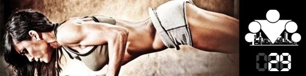

<==== Вернуться к оглавлению

День 22. Качество и Регулярность
День 23. Отдых (активный и пассивный)
День 24. Сколько можно спать?
День 25. Когда лучше тренироваться?
День 26. Секрет успеха в тренировках
День 27. Результаты тренировок: желаемые и достижимые
День 28. Правила управления временем
======> День 30. Почему возраст не повод прекращать тренировки?